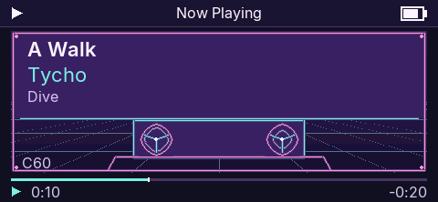

01 / BROWSE

Find your next favorite.
Flip through album covers, browse an artist’s albums by year, or jump through long lists by letter. No artwork? Gnarlyr gives the album a cover of its own.
Explore this screen →Custom firmware / SNOWSKY ECHO
Rediscover the music you own. Browse album covers, build the perfect play order, and give your ECHO a look that feels like you.
Meet the ECHO: specs & hardware →Made for the full-size Snowsky ECHO ↗.

Meet your new daily player
01 / BROWSE
Flip through album covers, browse an artist’s albums by year, or jump through long lists by letter. No artwork? Gnarlyr gives the album a cover of its own.
Explore this screen →02 / MIX

Move a song, add the next one, or save the whole mix. Save up to 32 mixtapes, including two-sided C60/C90 tapes you flip as you listen.
Explore this screen →03 / TUNE

Add warmth, bring vocals closer, or fine-tune a parametric EQ. Save your sound and keep favorite controls in Quick Settings.
Explore this screen →Screens shown with a sample library.
More ways to use your ECHO
Gapless playback keeps compatible tracks together, from live sets to continuous mixes.
Playback →M4B books get their own shelf, chapter titles, and bookmarks. Slow down or listen faster, from 0.5× to 3×, without changing the pitch.
Audiobooks →Assign tap and hold shortcuts. Skip with Power + Volume even while locked, or control playback with the screen off.
Controls →Choose Cover, Cassette, VU meters, or Spectrum for Now Playing. Add theme packs, pick a text size, and make the screen yours.
Personalization →Get the player. Make it yours.
Physical buttons. A pocket full of albums. The full-size Snowsky ECHO brings your library along, and Gnarlyr lets you make more of it.
Choose the full-size ECHO. Install Gnarlyr separately with the installation guide.
As an Amazon Associate I earn from qualifying purchases. I may also earn a commission from AliExpress links.
Gnarlyr Companion · desktop beta
Choose albums on your computer, review the copy, and build a mixtape for the road. Prepare the player library, preview theme packs, and set up its sound and languages from the same app.

Already have an ECHO?
Keep the player you love. Give it a new way to play.
Back up your music and follow the guide for your firmware image.
Copy one file to the player and let it install. Later updates work the same way.
Add your music, choose a theme, and press play.